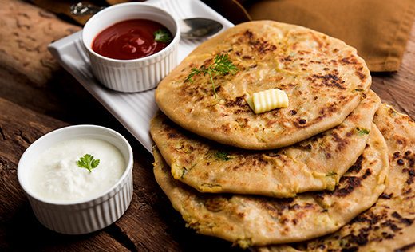

Idli with Sambar
Steamed rice cakes served with spicy lentil soup.
- Soak rice and urad dal overnight, grind and ferment batter.
- Steam batter in idli molds for 10–12 minutes.
- Prepare sambar with toor dal, vegetables, and tamarind.
- Serve hot idlis with sambar and coconut chutney.
More Info
Video

Aloo Paratha
Stuffed Indian flatbread with spiced mashed potatoes.
- Prepare dough with wheat flour, water, and salt.
- Make filling using boiled potatoes, onions, and spices.
- Roll dough, stuff with filling, and roll again.
- Cook on tawa with ghee until golden brown.
More Info
Video

Poha
Flattened rice dish with onions, spices, and peanuts.
- Rinse poha and let it soften.
- Heat oil, mustard seeds, curry leaves, and onions.
- Add turmeric, green chilies, and softened poha.
- Top with peanuts, coriander, and lemon juice.
More Info
Video